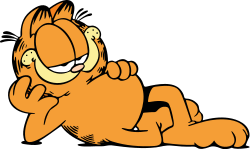
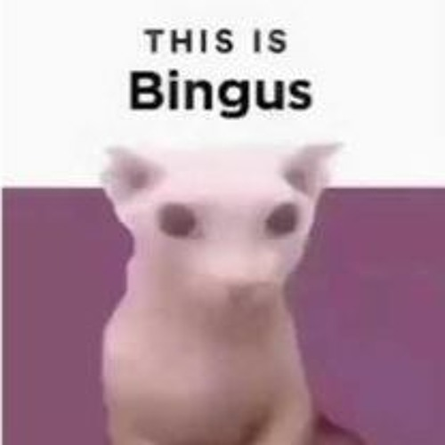

| 0 |  | Garfield is a fictional cat and the protagonist of the comic strip of the same name, created by Jim Davis. The comic strip centers on Garfield, portrayed as a lazy, fat, and cynical orange persian/tabby cat. |
| 1 | Garfield is a fictional cat and the protagonist of the comic strip of the same name, created by Jim Davis. The comic strip centers on Garfield, portrayed as a lazy, fat, and cynical orange persian/tabby cat. | |
| 2 | Garfield is a fictional cat and the protagonist of the comic strip of the same name, created by Jim Davis. The comic strip centers on Garfield, portrayed as a lazy, fat, and cynical orange persian/tabby cat. | |
| 3 | Garfield is a fictional cat and the protagonist of the comic strip of the same name, created by Jim Davis. The comic strip centers on Garfield, portrayed as a lazy, fat, and cynical orange persian/tabby cat. | |
| 4 | Garfield is a fictional cat and the protagonist of the comic strip of the same name, created by Jim Davis. The comic strip centers on Garfield, portrayed as a lazy, fat, and cynical orange persian/tabby cat. | |
| 5 | Garfield is a fictional cat and the protagonist of the comic strip of the same name, created by Jim Davis. The comic strip centers on Garfield, portrayed as a lazy, fat, and cynical orange persian/tabby cat. | |
| 6 | Garfield is a fictional cat and the protagonist of the comic strip of the same name, created by Jim Davis. The comic strip centers on Garfield, portrayed as a lazy, fat, and cynical orange persian/tabby cat. | |
| 7 | Garfield is a fictional cat and the protagonist of the comic strip of the same name, created by Jim Davis. The comic strip centers on Garfield, portrayed as a lazy, fat, and cynical orange persian/tabby cat. | |
| 8 | Garfield is a fictional cat and the protagonist of the comic strip of the same name, created by Jim Davis. The comic strip centers on Garfield, portrayed as a lazy, fat, and cynical orange persian/tabby cat. | |
| 9 | Garfield is a fictional cat and the protagonist of the comic strip of the same name, created by Jim Davis. The comic strip centers on Garfield, portrayed as a lazy, fat, and cynical orange persian/tabby cat. | |
| 10 | Garfield is a fictional cat and the protagonist of the comic strip of the same name, created by Jim Davis. The comic strip centers on Garfield, portrayed as a lazy, fat, and cynical orange persian/tabby cat. | |
| 11 | Garfield is a fictional cat and the protagonist of the comic strip of the same name, created by Jim Davis. The comic strip centers on Garfield, portrayed as a lazy, fat, and cynical orange persian/tabby cat. | |
| 12 | Garfield is a fictional cat and the protagonist of the comic strip of the same name, created by Jim Davis. The comic strip centers on Garfield, portrayed as a lazy, fat, and cynical orange persian/tabby cat. | |
| 13 | Garfield is a fictional cat and the protagonist of the comic strip of the same name, created by Jim Davis. The comic strip centers on Garfield, portrayed as a lazy, fat, and cynical orange persian/tabby cat. | |
| 14 | Garfield is a fictional cat and the protagonist of the comic strip of the same name, created by Jim Davis. The comic strip centers on Garfield, portrayed as a lazy, fat, and cynical orange persian/tabby cat. | |
| 15 | Garfield is a fictional cat and the protagonist of the comic strip of the same name, created by Jim Davis. The comic strip centers on Garfield, portrayed as a lazy, fat, and cynical orange persian/tabby cat. | |
| 16 | Garfield is a fictional cat and the protagonist of the comic strip of the same name, created by Jim Davis. The comic strip centers on Garfield, portrayed as a lazy, fat, and cynical orange persian/tabby cat. | |
| 17 | Garfield is a fictional cat and the protagonist of the comic strip of the same name, created by Jim Davis. The comic strip centers on Garfield, portrayed as a lazy, fat, and cynical orange persian/tabby cat. | |
| 18 | Garfield is a fictional cat and the protagonist of the comic strip of the same name, created by Jim Davis. The comic strip centers on Garfield, portrayed as a lazy, fat, and cynical orange persian/tabby cat. | |
| 19 | Garfield is a fictional cat and the protagonist of the comic strip of the same name, created by Jim Davis. The comic strip centers on Garfield, portrayed as a lazy, fat, and cynical orange persian/tabby cat. | |
| 20 | Garfield is a fictional cat and the protagonist of the comic strip of the same name, created by Jim Davis. The comic strip centers on Garfield, portrayed as a lazy, fat, and cynical orange persian/tabby cat. | |
| 21 |  | Bingus is a hairless Sphynx cat that originated from a video in which he is pet while staring at his owner. Attracting attention on Instagram in March 2020, Bingus’ popularity exploded in September after he appeared in a viral Reddit post, which later resulted in online users referring to all Sphynxes as "Bingus." |
| 22 | Garfield is a fictional cat and the protagonist of the comic strip of the same name, created by Jim Davis. The comic strip centers on Garfield, portrayed as a lazy, fat, and cynical orange persian/tabby cat. | |
| 23 | Garfield is a fictional cat and the protagonist of the comic strip of the same name, created by Jim Davis. The comic strip centers on Garfield, portrayed as a lazy, fat, and cynical orange persian/tabby cat. | |
| 24 | Garfield is a fictional cat and the protagonist of the comic strip of the same name, created by Jim Davis. The comic strip centers on Garfield, portrayed as a lazy, fat, and cynical orange persian/tabby cat. | |
| 25 | Garfield is a fictional cat and the protagonist of the comic strip of the same name, created by Jim Davis. The comic strip centers on Garfield, portrayed as a lazy, fat, and cynical orange persian/tabby cat. | |
| 26 | Garfield is a fictional cat and the protagonist of the comic strip of the same name, created by Jim Davis. The comic strip centers on Garfield, portrayed as a lazy, fat, and cynical orange persian/tabby cat. | |
| 27 | Garfield is a fictional cat and the protagonist of the comic strip of the same name, created by Jim Davis. The comic strip centers on Garfield, portrayed as a lazy, fat, and cynical orange persian/tabby cat. | |
| 28 | Garfield is a fictional cat and the protagonist of the comic strip of the same name, created by Jim Davis. The comic strip centers on Garfield, portrayed as a lazy, fat, and cynical orange persian/tabby cat. | |
| 29 | Garfield is a fictional cat and the protagonist of the comic strip of the same name, created by Jim Davis. The comic strip centers on Garfield, portrayed as a lazy, fat, and cynical orange persian/tabby cat. | |
| 30 | Garfield is a fictional cat and the protagonist of the comic strip of the same name, created by Jim Davis. The comic strip centers on Garfield, portrayed as a lazy, fat, and cynical orange persian/tabby cat. |